Cinemacity Starlight & 1927
Where Cinema Meets The Stage Stories Shared Moments Lived.
&
1927 is a private member's house
devoted to FILM, MUSIC and the ART of gathering.
Cinemacity Starlight
- Interiors drawn from the 1920s, the golden age of cinema
- Six screens in total, each with its own identity and colour palette
- Screen 5 is the Starlight Theatre, the heart of the venue
- Lobby reception for 200 standing, opening onto the Starlight kitchen
- Italian and Mexican menu, signed by open wood-fired pizzas
- The same recipe as our Graffiti restaurant at Al Qana
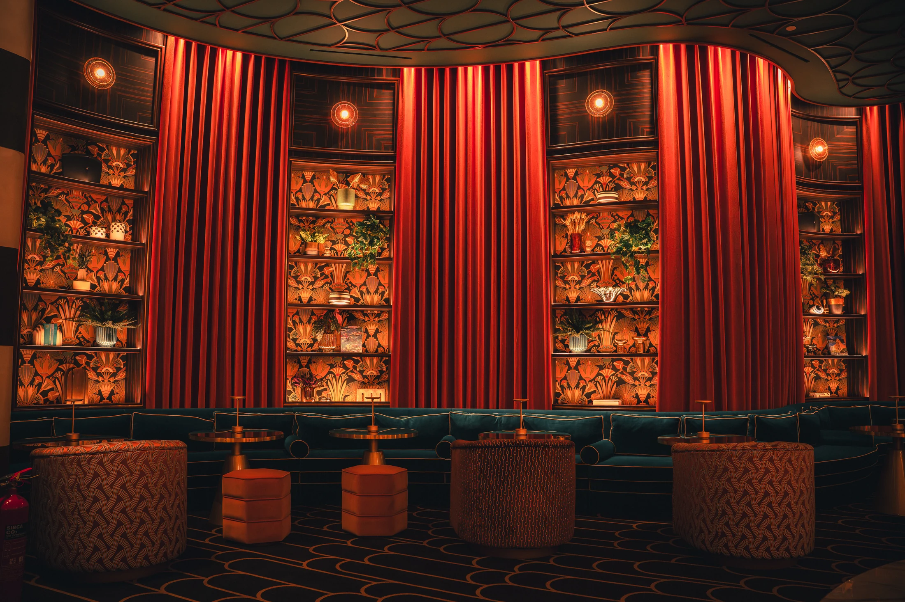
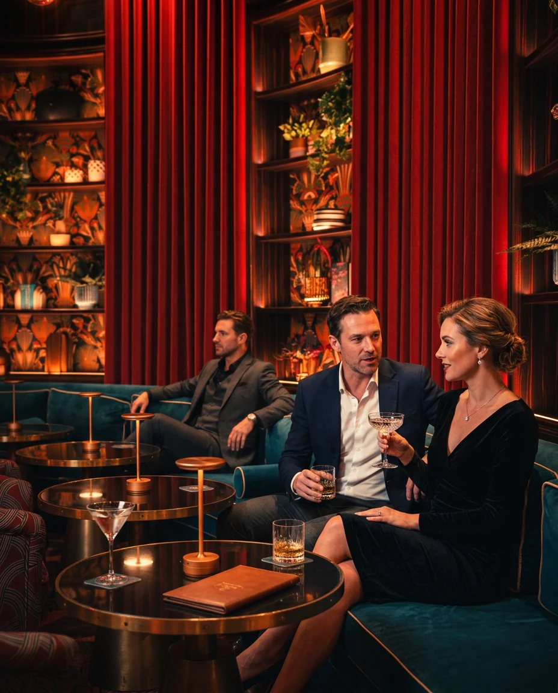
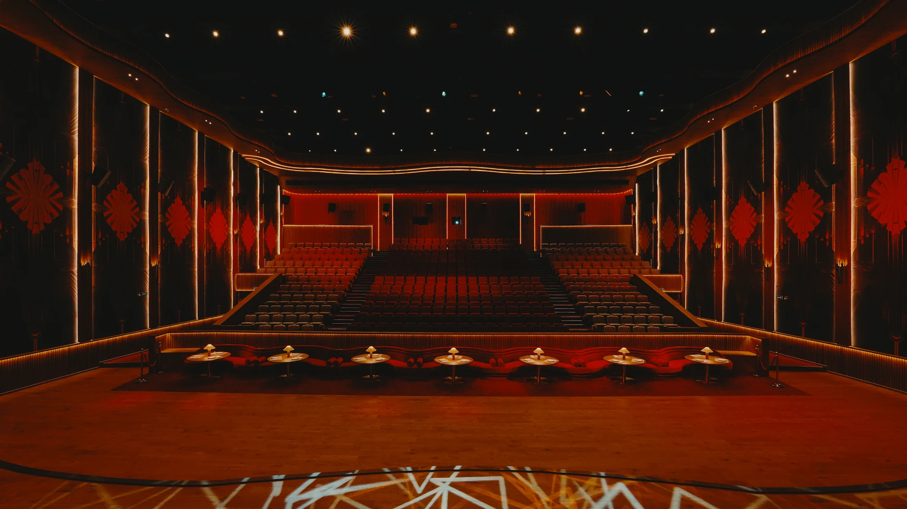
The Starlight Theatre
- Around 500 seated, with a modular section for dining
- Full stage for live performance: 10–20 performers
- Best suited to stand-up comedy, live bands, and small-company opera and ballet
- Artist rooms below the stage: several rooms and private facilities
- Conference, ceremony and premiere formats on request
The Screening Rooms
- Cinemas 1–4 and 6: 79–145 seats each, depending on the screen
- VIP: electric full recliners, call-button service, pillows and blankets
- Club: electric semi-recliners, in-seat ordering
- Deluxe: semi-recliners, in-seat ordering
- Dining served in-seat across every tier
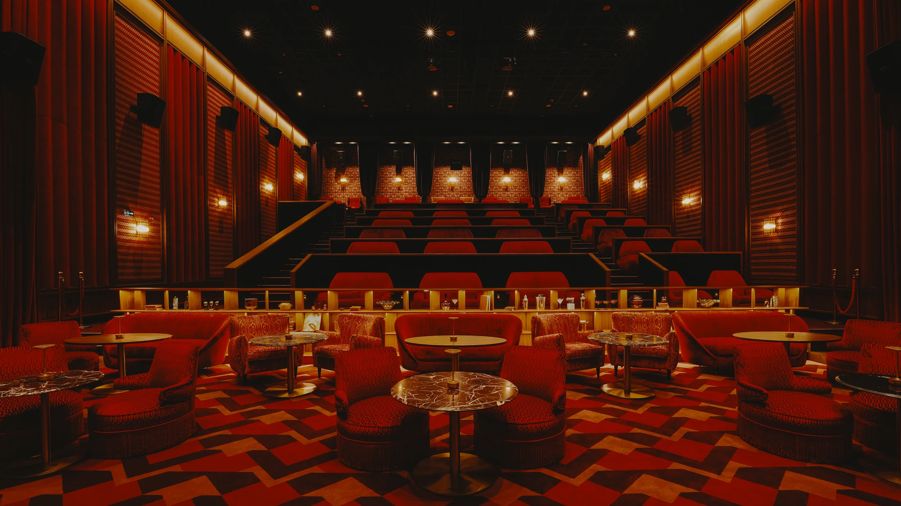
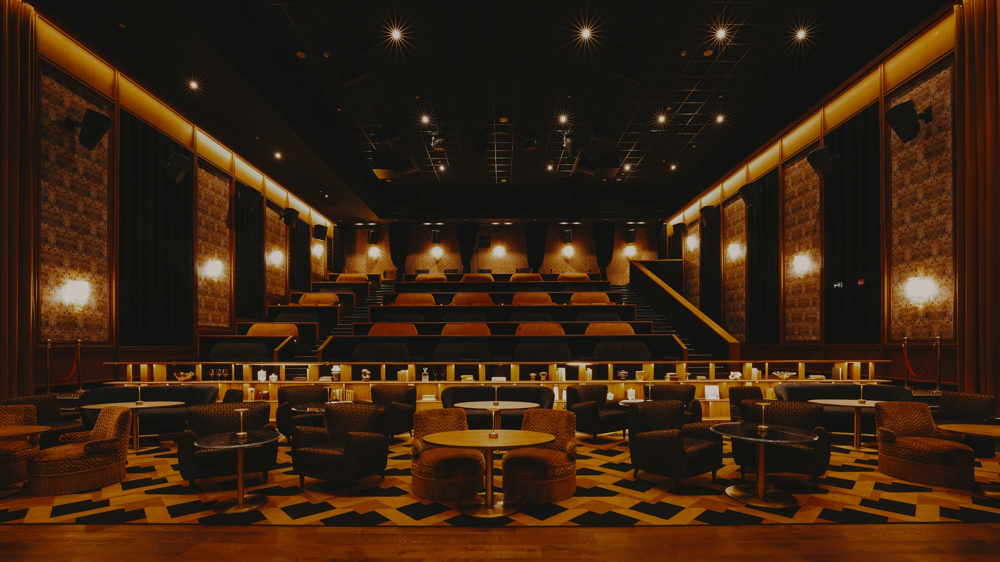
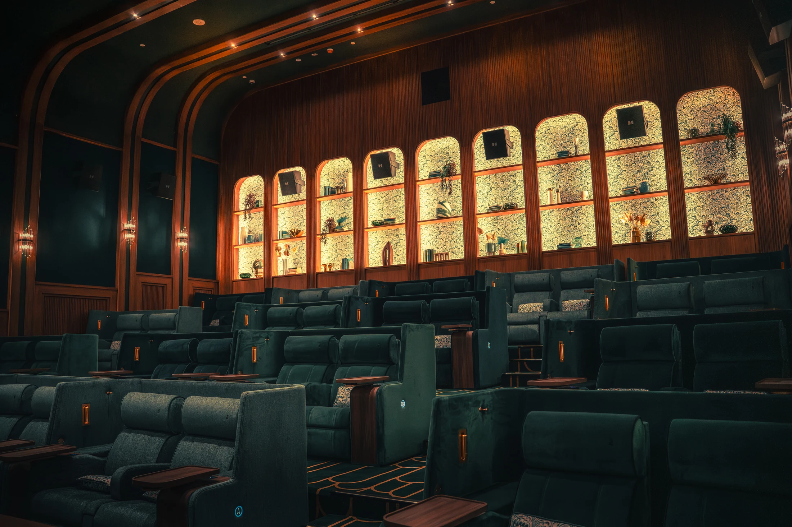
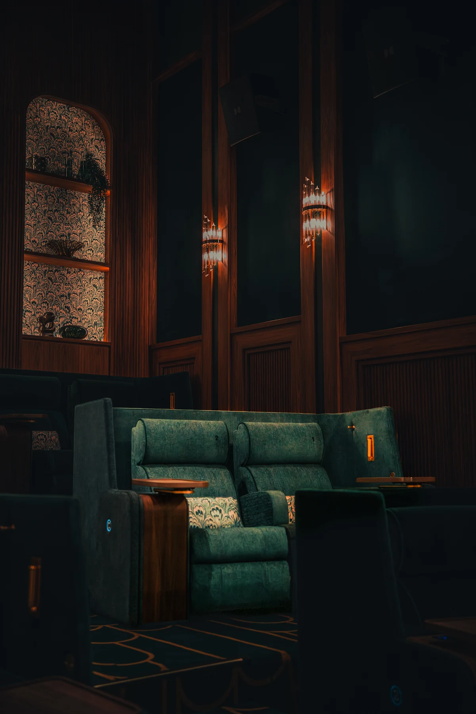
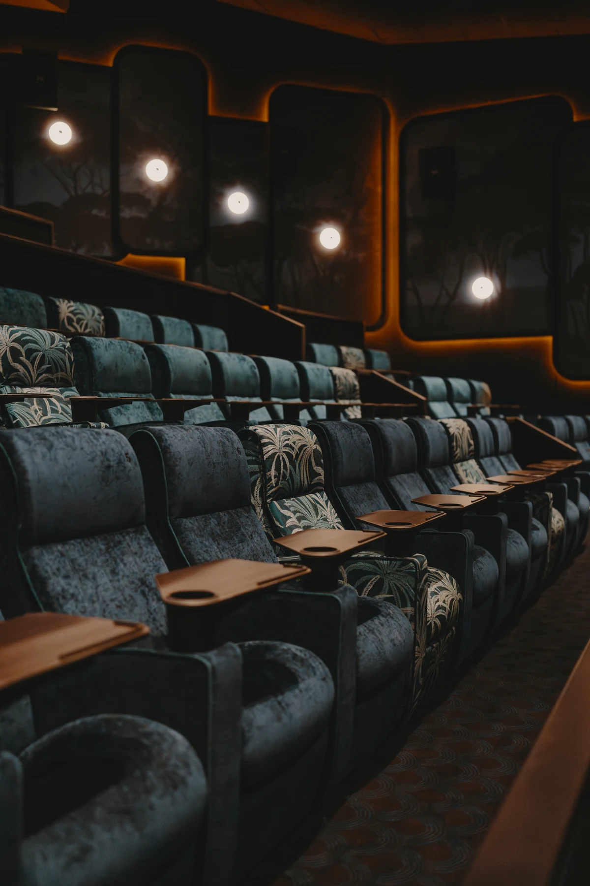
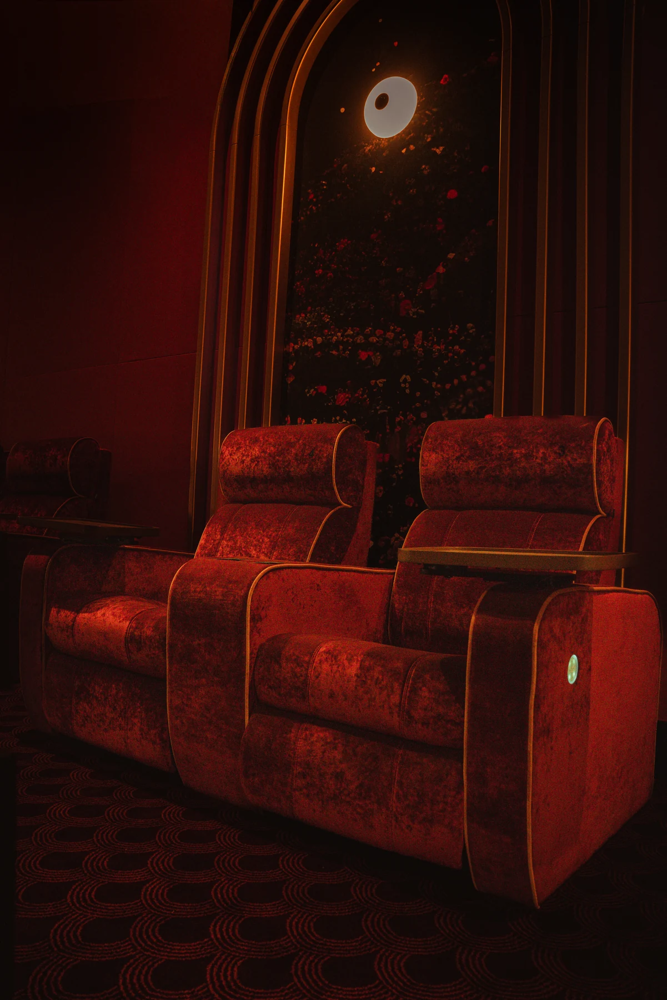
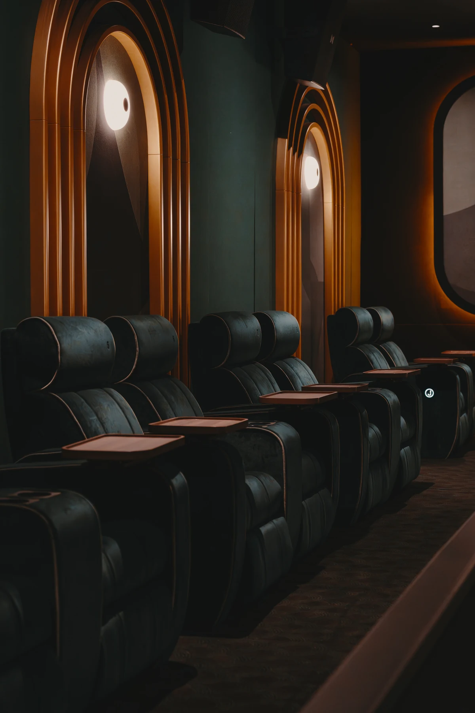
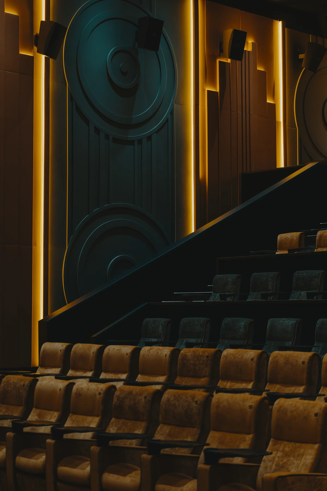
1927
- Three screens: The Vault, 34 fully reclining seats
- The Guild and The Cabaret, 88 couch seats each
- Restaurant and lounge: 80 seated · 120 standing · stage for 3–4 performers
- Second kitchen: Italian and Parisian, more elevated; menus across bar, restaurant and in-screen dining
- The Stateroom: private table for 12, for board meetings and panel discussions
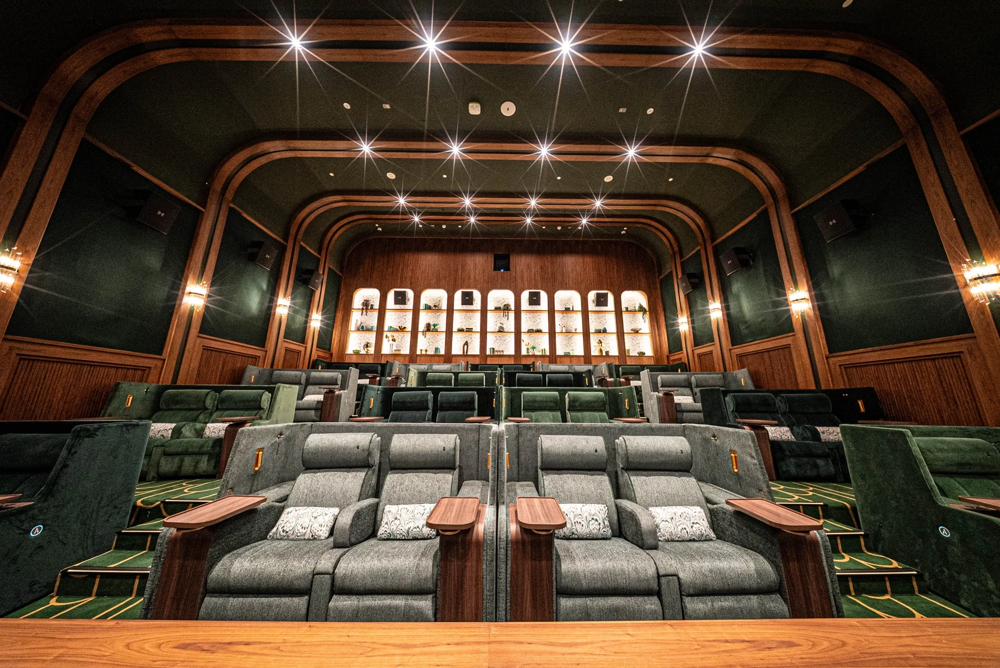
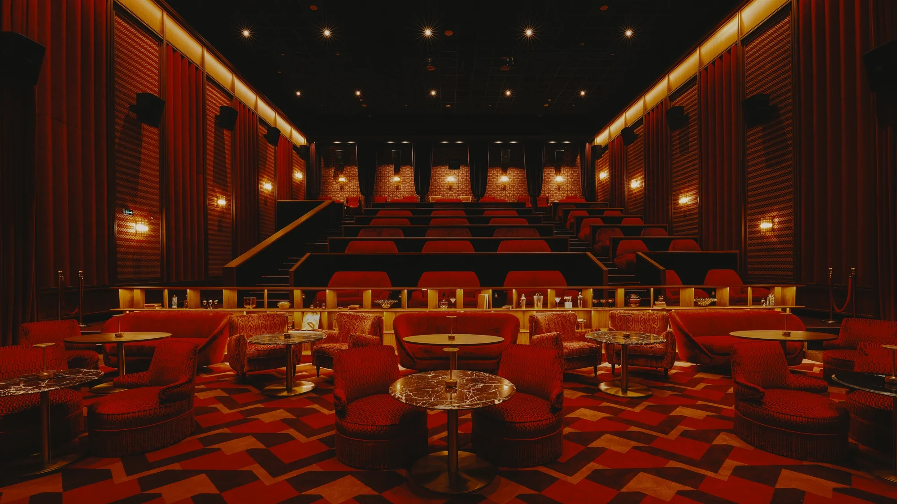
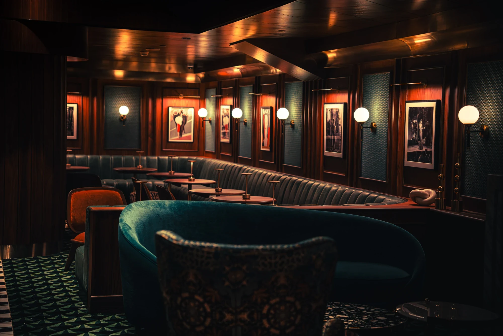
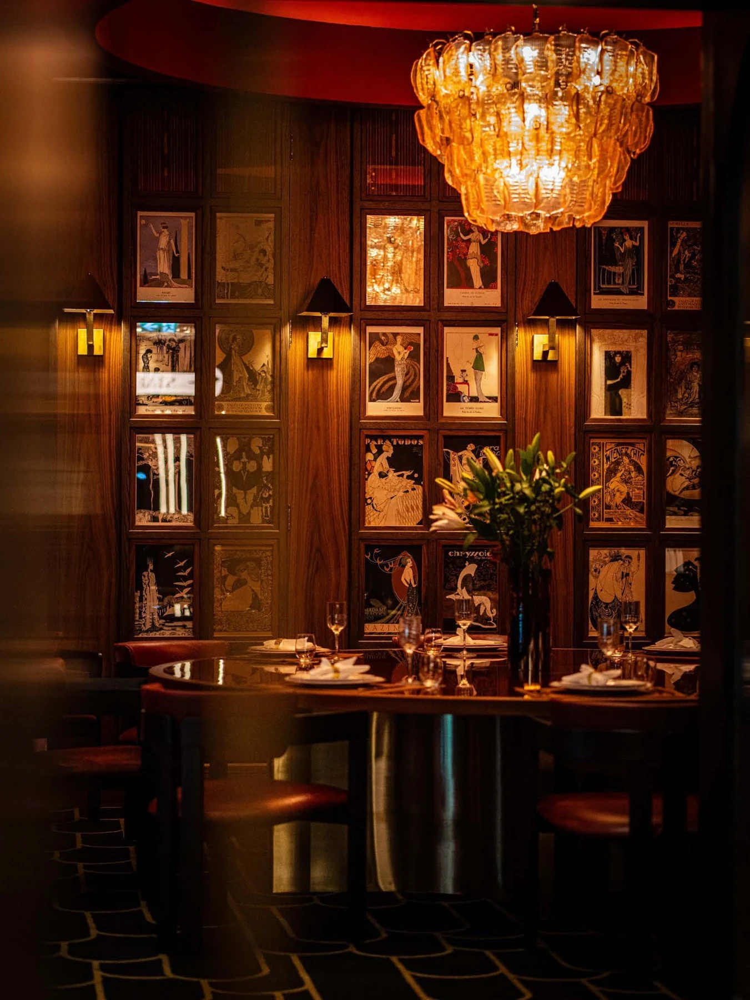
Craft and Technical Specification
- Dolby Atmos surround at Starlight; 1927 Atmos installation in progress
- Digital laser projection
- Resolume live visual system driving the main screen
- Custom screen artwork and professional AV team in-house
- Music licensing held and managed in-house
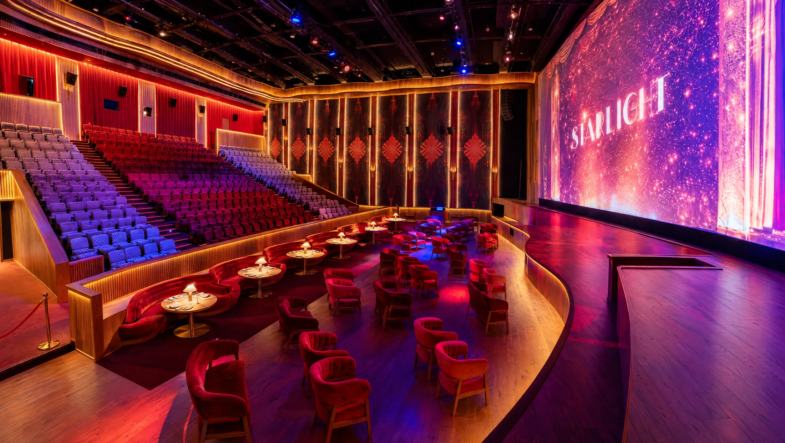

Hosting With Us
- Premieres, comedy, music, opera, ballet, ceremonies and corporate programming
- Included: dedicated event planner, full private use, branded décor, bespoke in-house catering
- Single-screen hire or full-venue buyout at both venues · Alcohol licensing available
- Saleh Atassi, General Manager · +971 56 533 7573
- Ramzy Shara, Events Coordinator · +971 56 364 5054
- cinemacity.ae · 1927.ae